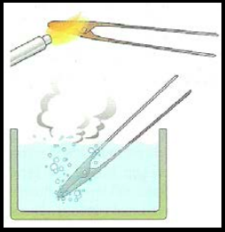
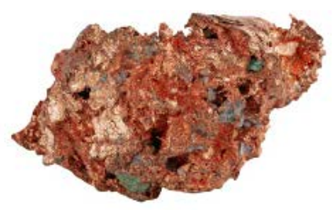
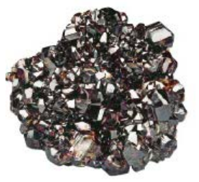
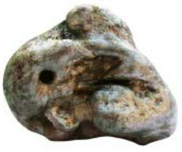
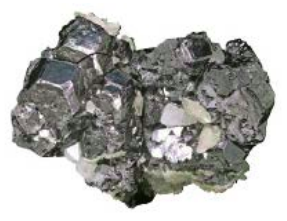

En la naturaleza existen 80 tipos de metales, pero la gran mayoría no se usan en su estado puro, sino que se mezclan con otros materiales para obtener aleaciones, como el acero. Estos materiales poseen una serie de propiedades que los hacen más idóneos para determinadas aplicaciones que los metales puros.
Todos los metales, puros y aleaciones, se clasifican en férricos y no férricos según la presencia de hierro en su composición.
METALES FERROSOS O FÉRRICOS
Son aquellos cuyo componente principal es el hierro. Entre ellos se encuentran el hierro puro, el acero y las fundiciones.
Son los más empleados en la actualidad, puesto que las técnicas de extracción del mineral como los procesos de obtención del metal son relativamente económicos. Los minerales de hierro que se extraen de la corteza terrestre deben someterse a diferentes procesos a fin de conseguir el hierro puro. Además del hierro puro, se utilizan también las aleaciones.
Una aleación es una mezcla de dos o más elementos químicos, de los cuales al menos uno, el que se encuentra en mayor proporción, es un metal.
Las aleaciones de hierro se obtienen añadiendo a este metal carbono. Según el porcentaje de dicho elemento, se clasifican en hierro puro (la concentración de carbono no supera el 0,03%), acero (la concentración de carbono oscila entre el 0,03% y el 1,76%) y fundición (la concentración de carbono se encuentra entre el 1,76% y el 6,67%).
HIERRO
El hierro es el metal más importante para la actividad humana y el segundo más abundante de la corteza terrestre (el primero es el aluminio). Se conoce desde la prehistoria y da nombre a un periodo, la Edad de Hierro, en que se extendió el uso de este material.
Es un metal de color blanco grisáceo que tiene buenas propiedades magnéticas; sin embargo, presenta algunos inconvenientes: se corroe con facilidad, tiene un punto de fusión elevado (se convierte en líquido), a unos 1600ºC y es de difícil mecanizado. Además, resulta frágil y quebradizo. Por todo ello, tiene escasa utilidad en su estado puro. Se emplea en componentes eléctricos y electrónicos.
Para mejorar sus propiedades, el hierro puro se combina con un elemento químico llamado carbono.
Propiedades:
- Se considera Hierro (Fe) puro.
- Se oxida con facilidad y se agrieta internamente
Aplicaciones:
- Aplicaciones eléctricas y electrónicas, buen conductor de la electricidad.
- Transformadores y motores eléctricos.
Observaciones:
- Es blando debido a que el contenido en carbono es muy pequeño
ACERO
El acero es la aleación de hierro más importante que se utiliza en la industria. A la fabricación de este material se destina alrededor del 75% del producto de primera fusión que se produce en los altos hornos.
Es un material de elevada dureza y tenacidad y de gran resistencia mecánica.
Los aceros aleados contienen, además de carbono, otros elementos químicos a fin de conseguir determinadas propiedades. Por ejemplo, el manganeso aporta dureza y resistencia al desgaste; el cromo aumenta la dureza y hace que el acero sea inoxidable, y el níquel evita la corrosión, mejora la resistencia a la tracción y aumenta la tenacidad.
Con el fin de modificar sus propiedades mecánicas, los aceros son sometidos a tratamientos térmicos, habitualmente el temple y el revenido.
- El temple: consiste en enfriar bruscamente el acero cuando ha alcanzado una temperatura muy elevada. Este tratamiento hace aumentar la dureza y la resistencia del acero, pero disminuye su tenacidad.
- El revenido: Consiste en enfriar muy lentamente el metal caliente. Este tratamiento disminuye la dureza y la resistencia del acero, pero aumenta su plasticidad y permite, así que se le pueda dar forma más fácilmente.

Propiedades:
- Son dúctiles y maleables.
- Se oxidan con facilidad.
- Se pueden forjar aumentando así su resistencia mecánica.
- Buena soldadura.
- Al incrementar el contenido en carbono incrementa su dureza.
- Son tenaces.
Aplicaciones:
- Vehículos, coches, chapas, alambres y herramientas de corte.
- Estructuras metálicas, utensilios de cocina.
Observaciones:
- Se moldean en estado sólido frío o en caliente.
- Los aceros con menor contenido en carbono se llaman “suaves” por ser más blandos y fáciles de moldear.
- El acero tiene más hierro y menos carbono.
FUNDICIÓN
Presenta una elevada dureza y una gran resistencia al desgaste. Se utiliza para fabricar diversos elementos de maquinaria, carcasas de motores, engranajes, pistones, farolas, tapas de alcantarilla, etc.
Propiedades:
- Menos dúctiles y menos tenaces que los aceros, pero más duros. (El carbono aporta dureza, pero aumenta la fragilidad).
- Funden fácilmente, a más baja temperatura que los aceros y el hierro puro.
- Mala soldadura.
Aplicaciones:
- Bloques de motores.
Observaciones:
- Permite fabricación de piezas complicadas utilizando moldes, porque en estado líquido son muy fluidas y se contraen poco al enfriarse.
- Las fundiciones tienen menos hierro y más carbono
METALES NO FERROSOS
Son materiales metálicos que no contienen hierro o que lo contienen en muy pequeñas cantidades. Entre ellos se encuentran el cobre, el bronce, el latón, el cinc o el aluminio.
Existen otros materiales metálicos no procedentes del hierro que, gracias a sus propiedades características, tienen una gran variedad de aplicaciones. No obstante, su obtención es, por lo general, muy costosa, debido a la pequeña concentración de sus menas y al elevado consumo energético que exigen sus procesos de obtención.
Los metales no ferrosos se pueden clasificar, según su densidad, en metales pesados, metales ligeros y metales ultraligeros.
Metales pesados.
Se obtienen a partir de los minerales cuprita, calcopirita y malaquita. Presenta una alta conductividad térmica y eléctrica, así como una notable maleabilidad y ductilidad.
Cobre: Es un metal blando, de color rojizo y brillo intenso. Se oxida fácilmente. Resulta muy adecuado para la fabricación de cables eléctricos, hilos de telefonía, bobinas de motores…También se emplea para fabricar tuberías, calderas y radiadores, y tienen aplicaciones decorativas y artísticas en arquitectura, bisutería y artesanía.

- Muy buen conductor eléctrico y térmico.
- Muy buena maleabilidad y ductilidad.
- Blando y de color rojizo.
- Se oxida con facilidad.
- A partir del cobre pueden obtenerse diversas aleaciones. Las mas conocidas son el latón y el bronce:
o Latón: Es una aleación de cobre y cinc. Presenta una alta resistencia a la corrosión. Se utiliza en ornamentación decorativa, artesanía, orfebrería y cubertería, así como en la fabricación de tuberías, condensadores y turbinas.
o Bronce: Es una aleación de cobre y estaño. Presenta una elevada ductilidad y una buena resistencia al desgaste y a la corrosión. Se emplea en hélices de barco, filtros, campanas, tuercas, obras de arte, engranajes, cojinetes.
o Alpaca: Aleación de cobre, níquel, cinc y estaño, que se usa en orfebrería y en bisutería por su gran parecido a la plata.
o Cuproníquel: Aleación de cobre y níquel, muy dúctil y resistente, empleada en la fabricación de monedas.
Plomo: Se obtiene de la galena. Es un metal de color gris plateado, blando y pesado. Tiene una notable plasticidad, es maleable y buen conductor del calor. Resulta muy tóxico por inhalación. Se emplea en la fabricación de baterías y acumuladores. En la industria del vidrio y en óptica se utiliza como aditivo que proporciona dureza y añade peso. También se emplea como protector contra radiaciones nucleares.
Estaño: Se obtiene de la casiterita. Es un metal de color blanco brillante, muy blando, poco dúctil, pero muy maleable, que no se oxida a temperatura ambiente. Con él se fabrica el papel de estaño y la hojalata, que es una chapa de acero cuyas caras están recubiertas con sendas películas de estaño. Además, la aleación de estaño y plomo se utiliza como material de unión en soldaduras blandas.

Cinc: Es un metal de color gris azulado, brillante, frágil en frío y de baja dureza. Se utiliza en cubiertas de edificios, cañerías y canalones, así como en la industria de automoción. Mediante el proceso denominado galvanizado se recubren piezas con una ligera capa de cinc, para protegerlas de la corrosión.
Metales ligeros y ultraligeros.
Aluminio: Es un metal blando plateado, que presenta una alta resistencia a la corrosión. Es muy blando de baja densidad y gran maleabilidad y ductilidad. Presenta, asimismo, una alta conductividad eléctrica y térmica. No es tóxico y es barato. Se utiliza en líneas eléctricas de alta tensión y, por su baja densidad, en la fabricación de aviones, automóviles y bicicletas. También se emplea en carpintería metálica, en cubiertas, decoración, útiles de cocina y botes de bebidas.

Titanio: este metal se extrae de dos minerales, el rutilo y la ilmenita. Es color blanco plateado, brillante, ligero, muy duro y resistente. Su brillo característico hace que resulte adecuado en ciertas estructuras arquitectónicas. Además, se emplea en la industria aeroespacial y en la fabricación de prótesis médicas, puesto que es biocompatible.

Magnesio: El magnesio se extrae de diferentes minerales, como la magnesita, la dolomita, la carnalita, la epsomita y el olivino. Es un metal de color blanco brillante similar a la plata, muy ligero, blando, maleable y poco dúctil. Reacciona violentamente con otros metales, permite obtener aleaciones muy ligeras, que se emplean en aeronáuticas y en la fabricación de automóviles, motos y bicicletas.
Berilio: De color gris acerado. Muy tóxico (sólo hay una fábrica en el mundo que lo produce). Muy Duro. En la industria nuclear se usa para producir neutrones. Su principal uso es en aleaciones para proporcionar dureza y conductividad eléctrica.
Metales nobles
Oro.
Plata.
Platino.